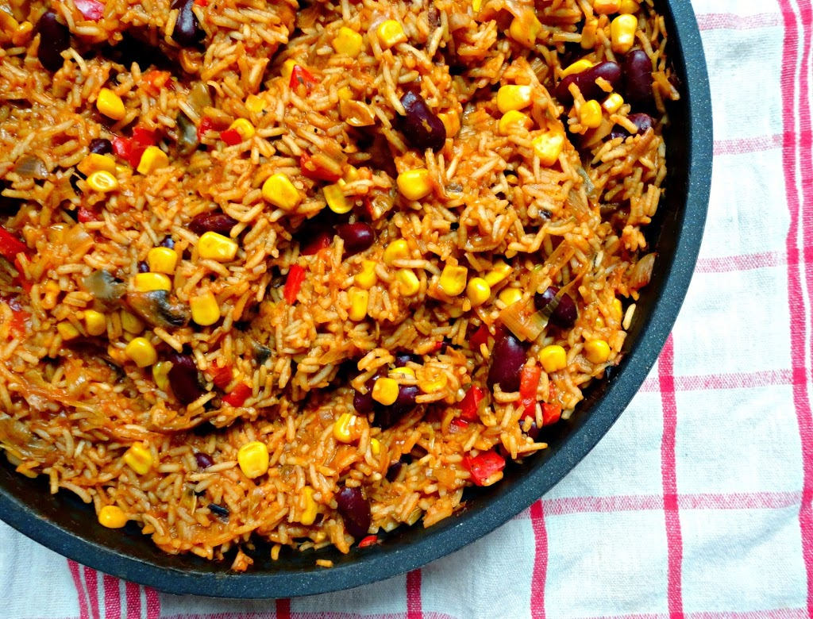

Mexican Veges and Rice

- Servings: 3
- Prep time: 20 mins
- Cook time: 40 mins
Ingredients
- 1 cup brown rice
- 1/2 spanish onion
- 1/4 Red capsicum
- 1 corn on the cob
- 1/2 lime
- pinch of salt
- 1/2 avocado
Method
- Add one cup of brown rice to a saucepan with three cups of water.
Heat on medium-high flame. It will start to boil over after about 15 mins
(not to worry, you can clean later).